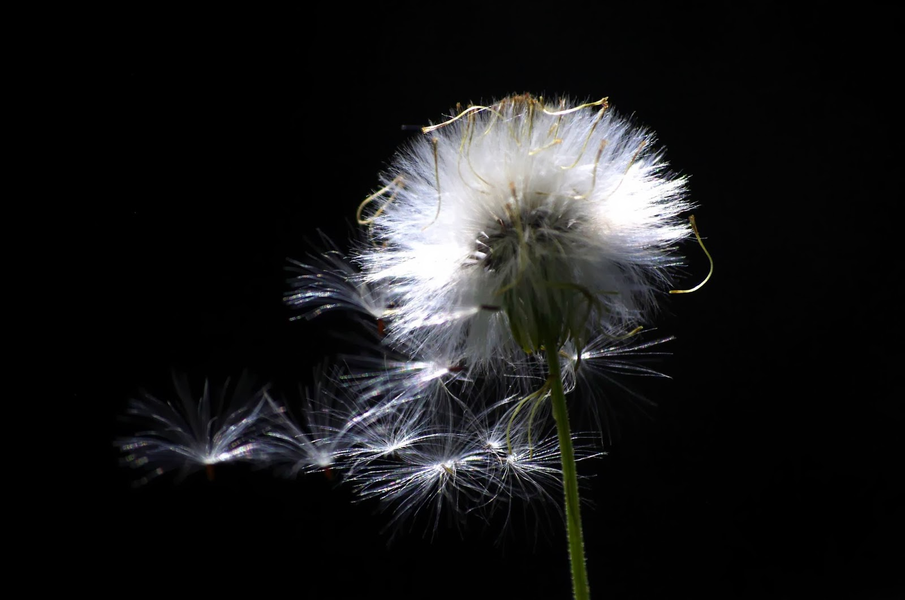
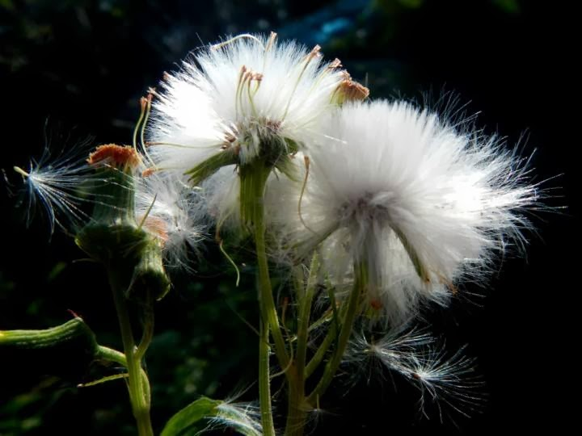

[Xmas] 美好的童話都發生在就寢後 ...
 |
| 英國大使館的小熊 |
1. 聽說會從煙囪爬下來背著一大袋禮物的聖誕老公公
2. 聽說會跳著芭蕾舞帶著小女孩展開大冒險的胡桃鉗小錫兵
3. 聽說會穿戴整齊，準備參加聖誕派對的可愛小熊
所以，（學孫越叔叔的口氣）夜深了！在外面遊蕩的孩子快回家睡覺吧～（咦？果然是擅長利用睡眠逃避現實的女人…）
聖誕快樂～～


[Taiwan] 這個夏天也很美麗 - 綠圈圈藝術季
 |
| 什麼東西很酷呢？ |
如果整個街弄巷道，都是可以盡情欣賞的藝術傑作。那麼對美的欣賞和評賞就會像呼吸一般自然，成為生活的一部份。所謂畫作，也不再是富豪僅僅懸掛在家中的擺設，而是更貼近生活作息的一種必然需求。位於台中的勤美術館，就創先在台中，以巷道街區為範圍，融合了都市景觀和藝術，讓藝術更無界限。
這個夏天，由勤美璞真文化基金會，以靠近科學博物館的誠品商場，以草悟道為界，在勤美術館展出的綠圈圈藝術季，讓整個台中市變得很美麗。
展出以裝置藝術為主，園區內充滿了大型的鋁箔裝飲料，成分都是耐人尋味的心靈元素。讓在忙碌沈重的都市生活壓得喘不過氣的都市人，能夠在這片綠色園地，席地而坐，喝上一大瓶調劑心靈的營養飲料。
 |
| 超大枝的西瓜冰棒 |
除了超大瓶的鋁箔包飲料，當然也少不了夏天必備的消暑聖品，西瓜冰棒。看看哪！這麼大隻的西瓜冰棒，在茵綠的公園裡，有還在興建，向著藍天長高的大樓當背景，看起來是不是很可口呢！
 |
| 超大型的鋁箔包飲料 |
 |
| 讓我們把新鮮空氣裝罐隨身攜帶吧！ |
拐個彎，下一個轉角，就可以看到從巨人國脫逃的白文鳥，卻不幸身陷在過小的鳥窩裡。啾啾的喚著都市裡的人們注意，好傾吐訴說著居住在鳥籠般大小的都市人的故事。我身有同感的拍了幾張照片，感傷的心思隨即就被別出心裁的鳥窩帽飾分散。頭戴著帽飾的工作人員，手持大聲公，熱情地宣傳在臉書打卡即可獲得免費獲得戴鳥窩帽飾拍照的機會。我抓緊機會，照下這個可愛又敬業的工作人員工作的模樣。心想，這個鳥窩帽飾，或許會繼 Lady Gaga 的牛肉裝，成為 2013 最新潮的時尚。
 |
| 好可愛的白文鳥呀～ |
 |
| 也很可愛的工作人員～ |
而埋在綠地，被修整過的草皮掩蓋的轎車，傳遞著自然重新掌握科技的人文訊息。而早已習慣在車水馬龍的都市的我們，何時才能在過度污染的汽車廢氣中，好好的深呼吸呢？
 |
| 埋在草皮下的汽車（還能開嗎？） |
園區內，最引人注意的，成為大家爭先恐後拍照的對象，大概是來自世界各地的舉牌小人。小人們稱職的舉著各式各樣的標語，無論下雨或大太陽，傳遞著藝術即是生活的訊息。而我，對著這些認真的舉牌小人猛點頭。因為當藝術，就像在街角的便利商店般無所不在，那麼美麗，真的是隨手可及。
 |
| LOVE |
 |
| 咕咕～該回家囉～ |
[Photos] 爸爸的攝影教室 - 蒲公英的拍攝方法
|  |
| 老爸的蒲公英傑作 |
最近和父親與母親一起到田野間練拍。一到鄉間田野，大家各自拿著相機忙著拍照，忙著拍花的，淨往花叢間鑽去。而忙著捕捉小昆蟲蹤跡的，扮演起福爾摩斯，仔細尋找小昆蟲的蹤跡。雖然，拍照時沒時間好好切磋，事後，在分享彼此的照片時，總會有著不一樣的驚喜。近日，父親大人就在臉書上貼了一張，在大太陽底下拍攝的白色蒲公英照片（Post by Rene Wangritte）。有趣的是雖然在田野間又是在大太陽底下拍攝，可是蒲公英的背景卻是全然的黑色，就像是在攝影棚內拍攝一般。照片裡高反差造成細緻的光影對比， 形成一張主題明顯，相當有特色的照片（註）。
這張照片，當然引起我的興趣，馬上追問父親大人，這張照片倒底是用什麼技巧拍攝的。在父親大人的詳細解說下，才知道用的技巧相當簡單。第一：逆光拍攝，第二：對著蒲公英亮點點測光。
為了馬上實踐父親大人的教學，我和母親各自拿著自己的相機，終於有個機會在光天化日（咦？）之下逮到蒲公英。我們三人，難得肩碰肩，一起圍繞在蒲公英旁邊，一致將相機朝向陽光，努力捕捉蒲公英隨風飄曳的身影。
雖然只有簡單兩點，可是親自操作起來好像也沒這麼簡單。下面這張，就是學生一號，母親大人的作品。相機是普通的傻瓜相機，Nikon Coolpix aw100。
|  |
| 學生一號（母親大人）的作品 |
雖然沒有背景全黑，但是也相當成功呀！小傻瓜造成的反差效果雖然沒有單眼這麼大，但是，整株蒲公英毛茸茸的，有點像沒睡飽的貓熊寶寶的毛髮，卻也相當可愛。其次因為傻瓜相機（point and shoot）的測光方法都是自動的，所以後來和父親大人討論過後， 覺得應該只要對著逆光拍攝，確定相機的自動對焦是落在蒲公英上即可，使用怎麼樣的測光方式，好像不是這麼重要。所以，使用傻瓜相機的攝影玩家們，請趕快拿起妳們的傻瓜相機試試吧！（或許智慧型手機也可以喔！如果使用智慧型手機成功的，請留言並附上讓人驚艷的蒲公英照片吧！）
 |
| 學生二號（我） 的作品 -背景還不是很黑呀！ |
 |
| 學生二號（我）的作品 – 呼！背景終於黑掉了！ |
接下來就是我的兩次還可以看的嘗試啦！第一次好像沒有很正對陽光，所以背景還有些許亮光。拍攝時，把光圈開到最大，讓背景模糊，因為是大光圈又是逆光的原因，所以光暈成很漂亮的圓形，算是意料之外的美麗了。
第二次，終於橋對位置，背景全黑囉！順便感謝母親大人很努力地為我們製造蒲公英飄散的效果。雖然成功完成在光天化日之下讓背景全黑的蒲公英獨照，可惜美中不足的地方還是很多，比如說選擇對焦位置還是不能掌控的很好（我可以怪我相機的自動對焦系統嗎？！），只能說能進步的空間還是很大囉～
 |
| 來張直的！ |
為了拍這張蒲公英，在草叢間蹲坐的時間真的很久。我都開始懷疑，是否也躲藏在草叢裡的青蛙，開始覺得我占著它的位置太久，呱呱叫著表示抗議呢。為了補償，我在草叢和陽光以及對焦系統抗戰許多，所以就很厚臉皮的又貼了一張直幅的蒲公英了！
最後，請大家有空一定要拿著相機對著陽光拍拍看看呀，真的很有趣呢！
註：父親使用的相機是 Pentax KX，我的則是 Sony Nex 5N
[Kyoto] 京都速寫 - 往鞍馬的列車
 |
| 開往鞍馬的列車 |
聽
說在秋日楓紅之際，往鞍馬的列車的風景，是最別緻動人的。雖然不是，在炎炎夏日逐漸轉為入秋微涼的時間前往京都，也無法看見大地為綠鬱的楓樹渲染一身火紅的新裝，但是搭乘著往鞍馬山駛去的列車，青蔥翠綠的樹林在列車窗戶外，彷彿加入大自然的合唱團似的，隨著列車篤篤的韻律，枝葉沙沙輕輕晃動，竟也感受到奇異的寧靜和祥和。
這列寧靜的鞍馬列車，終點是日本平安時代的悲劇人物，源義經小時修行的鞍馬寺。在出發旅程之時，讀過源義經的故事。因為小時父親源義朝被宿敵平清盛所敗，在七歲的時候，被殺父的敵人送至鞍馬寺修行。
而年僅七歲的源義經，對人事還懵懵懂懂，卻早已懷抱著殺父之仇非報不可的深仇大恨，用怨恨悲憤的方式生活著。而這樣對仇恨偏執，對世間不平忿恨難填的高傲個性，或許導致他最終和親身兄長源賴朝決裂而遭殺戮的悲劇一生。
或許，在某個許許多多情感掙扎與追逐名利成就的時刻中，源義經望見了我在開往鞍馬山的列車上所瞥見的一景：一個小女孩，扮演著母親的角色，細心的照顧著她的塑膠娃娃，不僅蓋上手帕並小心翼翼的輕輕呵護，或許也能在心中盪起對平凡和簡單的嚮往。
或許，他並沒有望見這一景，又或許當他望見時，他已經無法從洶湧波濤的命運陷阱中脫身而出。總之，源義經最後手刃自己四歲的女兒，以三十一歲的青壯之年自裁身亡，而留下傳奇的悲劇結局。
我望著小女孩，不勝唏噓地想著源義經悲劇的一生，最終也沒在鞍馬寺下車。因為，如果旅途的價值在於妳所看到的風景，那麼我已經看到我所想要的了。
延伸閱讀：源義經的中文 Wiki
[Taiwan] 夢境


{kind=link}
{kind=link}
錦瑟無端五十絃，一弦一柱思華年
莊生曉夢迷蝴蝶，望帝春心託杜鵑
滄海月明珠有淚，藍田日暖玉生煙
此情可待成追憶，只是當時已惘然

和母親與父親大人到龍潭家中附近的田野練拍。 母親持著小相機，一邊努力捕捉小昆蟲的身影，一邊很訝異她的相機鏡頭都要貼到蜜蜂的頭部了，蜜蜂仍不捨離去。我笑著說，這些昆蟲昨晚開派對，喝掛了。又或許…
或許，這次莊周夢裡變成的不是蝴蝶，而是停留在隨風搖曳的波斯菊上的蜜蜂，正做著如酣的美夢。又或者我只是蜜蜂夢裡的一個過客，當蜜蜂夢醒的時候，持著相機的我，就會化成一縷輕煙，飄散離開 …
蜜蜂呀，蜜蜂，你倒底在做著怎麼樣的美夢呢?

[Kyoto] 京都速寫 - 巷弄間的光影故事

記 得是在清水寺寧寧小道附近的巷弄，那時夏日京都的夕陽，將巷弄灑滿了柔和的斜照光。
在滿是傳統木造建築的京都，彷彿增添幾許沈穩的靜謐和古典的優雅。偶見穿著淺色和服，梳著短髻的日本少婦，淺綠的澆花壺懸在手邊，彷彿規律的鐘擺，從左至右，又由右至左地在少婦身邊搖盪。
少婦邊晃著澆花壺，邊在巷弄間逆光緩慢前進，好似執意練習一種讓人心安的儀式，經由反覆執行簡單的動作，而達到心靈那種純粹和恬靜。我握著相機，感覺京都黃昏溫暖的光，從她執拗的身影透出，而屬於京都巷弄間，小民裡的平穩和寧靜，就投影在她斜斜長長的影子裡，逐漸拉長…
於是我想，這裡是京都， 一個不曾背棄悠久的歷史傳統而出走的城市。
[Taiwan] 味衛家紅柿情 - 兩小無猜
 |
| 在父親大人的指導下（及嚴格的要求下）拍出的作品！（可是也沒拍好啦 …） |
 |
| 分享 |
 |
| 不分享 |
啊
～柿餅真是好好吃啊～（雖然小朋友是在分餅乾…）我可以理解可愛小妹妹不想分享好吃餅乾的心情呀～
相信這個小小的拒絕，應該不會對小小男朋友的身心造成影響呀！兩小無猜的小朋友感情應該還是可以很堅定地走下去吧…我想…
更多有關味衛家：當九降風起 – 味衛家訪紅柿
 |
| 耀眼的陽光 |
[Taiwan] 當九降風起 - 味衛家訪紅柿
 |
| 做日光浴的柿子 |
約莫十月至十一月間，台灣因東北季風盛行，而使得島內有些地方風強而雨少。固有風城之稱的新竹，又稱呼這時節的強風為九降風，在古時仰賴天公吃飯的農村果民，紛紛將需要風乾的食品，在九降風起時，拿來出戶外曝曬風乾。恰巧在這個時節成熟的柿子，為了能將柿子脫澀，需要長時間接受日光的照射和沐浴，而曬柿，就成了這個九降風起最重要的一個農民活動。
柿子，多半生長在東亞一帶，在歐美地方，除了加州，大概在南歐一帶產出形態較為嬌小的豆柿。或許因為相貌圓潤，成熟時又紅潤飽滿，柿子也常被中國和日本當作長壽的象徵。在台灣，柿子的種類可以因為口味粗略分為兩種，甜柿和澀柿。甜柿一如其名，是已經可以出嫁的黃花閨女，在樹上成熟後，滋味便是甜美滋潤， 甚是甘醇入口。
而澀柿，就像還在青春期的少女，在樹上摘下後，不是利用石灰水進行化學脫澀，就是長時間經由日光曝曬，讓柿子內富含的葡萄糖滲出柿皮外，而變得甘甜。澀柿又可以往下分，有完全澀柿和不完全澀柿兩種。不完全澀柿，因為種子的多寡，而決定味道有多澀苦。一般，種子較多的不完全澀柿，在種子周圍分布的果肉滋味較甜，這其中的因果，猜想恐怕是因為，想吸引鳥類昆蟲前來享用，而造成播種順利的演化優勢吧！
完全都不甜的澀柿，也不置于就被人們棄如敝屣，任其在樹上腐爛，自生自滅。聰明的古代農民們，早就瞭解利用日光自然脫澀的道理來製作好吃又甜美的柿餅。當一連數日，做著日光浴的澀柿們，就像徹頭徹尾的重新做柿般，原本富含給予紅葡萄酒刺澀口感的苦澀丹寧，因為澀柿的逐漸成熟，而被移除。取而代之的是，是在果肉內富含的葡萄糖。被連晒數日的澀柿們，就像做完日光浴，而流了一身大汗，在柿皮外層，覆蓋著白色結晶的葡萄糖衣，也成了柿餅外皮常見一層薄薄又雪白的葡萄糖結晶。這層糖衣可是自然加工的化學結果，和先民細微的觀察和發現呀！
 |
| 晒好的柿子還是準備被晒的柿子？ |
而目前能費時利用日曬進行脫澀，應該就是在新竹新埔一帶的柿子果園。因為柿子飽和的色彩，和客家文化的鮮艷花紋衣著，而成了攝影主題中豐富的主題。在新埔一帶，眾多柿子果園中，其中又以劉家經營的味衛家，更是受到攝影同好的青睞。之前在父親大人撰寫的文章中，提到了到味衛家出名的模特兒，劉家二姐，害我也不禁想要前往拜訪拍攝，捕捉客家婦女純樸自然的好客和笑容。於是，這天和父母親起了大早，趕上了晒柿的火熱季節，駛車來到新竹味衛家，準備來捕捉劉家姐妹的倩影。可是到了味衛家，先是看到了睡在一籃柿子，好睡好吃的穿著白靴的黑貓。坐擁甘甜美味的柿子，做著美夢的黑貓，被攝影同好們吵醒，顯然不是很開心。
 |
| 沒睡好的貓總管 |
除了拿著相機到處走走拍拍，幾乎要擠滿規模不算大的味衛家，另外就是前來戶外教學的可愛小朋友們。當日早上大概有三隊幼稚園小朋友，前來學習柿子的製作。以下就是迫不急待的小妹妹，準備要替柿子按摩的樣子！
 |
| 幫柿子做按摩囉！ |
那我滿心期待的劉二姐呢？！
 |
| 劉二姐？！ |
 |
| 對柿子充滿愛意的雙手 |
原來味衛家有名的專業模特兒劉大姐和二姐，只有在週末的時候才會出來為大家表演。不過，我們運氣還不錯，遇到了味衛家敬業的員工，喬裝成晒柿的婦人，登著小短梯，穿著袖套，在酷熱的大太陽下，當成模特兒，供我們這些攝影狂熱者拍照。真是太辛苦啦！可能也是太熱了，過沒多久，模特兒就一邊很敬業的微笑，一邊大聲的詢問好了沒有。我們這些求好心切的攝影師，卻頻頻要模特兒再多撐一下，多面向鏡頭，擺些不一樣的姿態。過了好一陣子，再敬業的模特兒也受不了，於是就收工回府了。
 |
| 敬業的模特兒 |
拍完了柿子和模特兒，便買了幾盒柿餅。味衛家的柿餅種類主要是由牛心柿，石柿和筆柿三種澀柿的種類作成。其中又以筆柿最為甘甜。我細細咀嚼品嘗著柿餅內外都甜美的滋味，裡頭盡是秋獲豐美的感謝。或許，明年九降風再起，我還要再訪此地，再次豐富視覺和味覺的感受。
延伸閱讀：
Dirbs & Drabs：（文藝） 新竹柿餅節。味衛佳秋季金黃菓子
 |
| 黑貓總管換地方繼續睡 |
 |
味衛家
地址：新竹縣新埔鎮旱坑里11鄰旱坑路一段283巷53號 [googlemaps https://maps.google.com.tw/maps?q=%E6%96%B0%E7%AB%B9%E7%B8%A3%E6%96%B0%E5%9F%94%E9%8E%AE%E6%97%B1%E5%9D%91%E9%87%8C11%E9%84%B0%E6%97%B1%E5%9D%91%E8%B7%AF%E4%B8%80%E6%AE%B5283%E5%B7%B753%E8%99%9F&ie=UTF8&hq=&hnear=Lane+283,+Section+1,+H%C3%A0nk%C4%93ng+Rd,+Xinpu+Township,+Hsinchu+County,+305&gl=tw&t=m&z=14&brcurrent=3,0x34683690a6215641:0xa2fd3b078d3904c5,0,0x3468412ca1674fd5:0x4061145f0e1f1fc9&ll=24.839519,121.076224&output=embed&w=200&h=175] |
| 笑容一百分 |
[Australia] 一個人和相機在南半球旅行 - 旅程的終點
 |
| 到了要說掰掰的時候了 |
呼！從去年十月開始紀錄的雪梨和墨爾本遊記，終於在計畫下一次旅行前結束。雖然，應該在沒有靈感時，就應該嘎然停止。但，總覺得像寫程式一樣，所有的邏輯都應該要包含在兩個大括弧中間，而我的右大括弧，就在這裡寫下。
每當看到這些照片，回憶起短短十幾天，經歷過的路人，無論和我一樣帶著好奇雙眼的觀光客，或是對這兩個城市早已習以為常的本地人，都曾溫暖的伸出援手，親切的指引我到達旅途的目的地。這或許才是旅途中，最珍貴的回憶，歷經和日常生活不一樣的經歷，接觸陌生人的暖暖善意，瞭解在平常枯燥的生活中累積和努力，就是為了在這短短幾天，經由截然不同的文化環境洗禮，而重新再生。
雖然不再書寫澳洲，但是下一個旅程卻已悄悄的展開。接下來的一週，我即將帶著小愣和撒魯先生們回娘家，飛往日本關西，參拜大佛和追逐小鹿，不僅接受日本古都的熏陶，也要嚐遍日本精緻的茶道甜點。
我要一探，明智光秀悄悄率領著部隊南下，大喊著“敵人就在本人寺”，而迫使織田信長在夜裡的戰火，倉皇無奈的得知光秀的叛變。我要一窺，電影宮本武藏中武臟和阿通三年相約見面的花田橋，見證兩人美麗的愛情。以及舒國治在門外漢的京都中寫著：
“事實上，京都根本便是一座電影的大場景，它一直搬演著「古代」這部電影，這部紀錄片。”
而我即將來到這個一直沒從古代走出的城市，紀錄 ，感受。心裡不禁感到一陣興奮和雀躍。如往常，部落格將停止更新（雖然我也經常性的罷工啦！）一週，大家就請在家翹著二郎腿等著我的明信片吧！
 |
| 在觀光大城，墨爾本人仍舊甜蜜的生活 |
 |
| 街頭表演者的一抹頑皮的微笑 |
 |
| 有著音樂夢想的年輕人們 |
 |
| 遊艇衝好快呀~渡輪慢慢行駛~ |
 |
| 回程 |